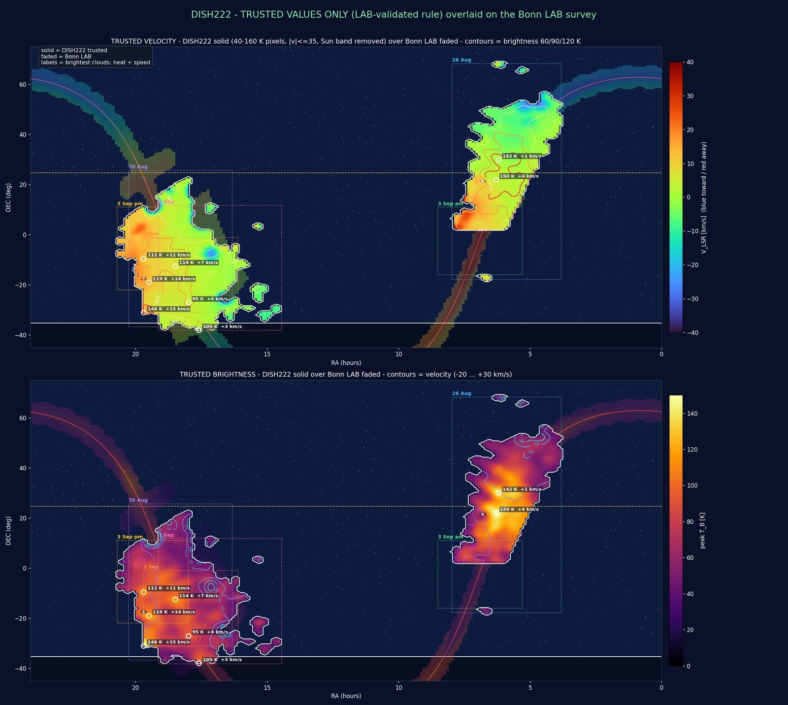

Step 2 · Data Library
The project's datasets, level by level
Every observation, product, figure and calibration record in the research archive, catalogued with its processing level, calibration scale, source availability and known limitations. Datasets that are known to exist but are not yet in the archive are listed too.
A · Explore data
Which observations exist, which telescope produced them, what question they support and what students can explore. See the processing levels, the recommended dataset and all datasets.
B · Scientific Archives
Which files and products exist, at what processing level, in which formats, and what can eventually be downloaded. See the archives by telescope.
A · Explore data · Processing levels
L0 → L8: from recorded spectrum to reproduced result
Each level is made from the ones below it. The chips show where the datasets in the archive sit. Click one to open its record.
Terminology. L0 here means the averaged power spectra written by the acquisition software. DISH222 does not store raw I/Q radio samples, so no dataset in the archive is "raw SDR data".
26 Aug 2026 · outer-Galaxy raster with DISH222
An automated raster from 02:48 to 05:48 UTC across Galactic longitudes 146°–226° and latitudes −10° to +20°. It is currently the strongest reproducible chain in the archive: the native averaged spectra (776 files) and the pointing manifest (313 positions) are both available, alongside every product made from them.
All products of this session are on the relative C0 (dB above baseline) scale. The external processing code that produced the tables and FITS files is not in the archive, so re-deriving them from the native spectra is itself a research task (Track A).
- Acquisition
- Processing
- Science product
- Visualization

Showcase product
The all-sky "TRUSTED" composite
This composite combines six observing sessions between 26 Aug and 3 Sep 2026 into one map of peak brightness and velocity, overlaid on the LAB reference survey. It keeps only pixels that pass a selection rule (40–160 K, velocities within ±35 km/s, a dawn Sun band and speckles removed).
Showcase, not a starting point. It is a derived, curated (L6) product whose native lineage is incomplete in the research archive: only one of its six source sessions has native spectra available. Its selection cuts remove faint and high-velocity gas by construction. Its calibration is not recorded in the product metadata; the historical C2 scale is inferred from project chronology (C2 was in use when the composite was made).

Browse
All catalogued datasets
Open a record for its purpose, processing, calibration, lineage and known limitations. Research files are held in the project's research archive and are not published on this site. Ask the project team about access.
B · Scientific Archives
What actual files and products exist
Archives are organised by telescope, then by processing stage. Placeholders mark stages whose files are not yet ingested. Nothing is downloadable unless it says so.
- Available
- Awaiting ingestion
- Planned
-
Archive lineage from original spectra to a planned modern archive:
- TXT spectra
- MAT bundles
- RA/LST-corrected MAT bundles
- master MATLAB structure
- future FITS / CSV / JSON
-
The same archive structure as a set of placeholders: original, aggregated and processed data, FITS, metadata and derived products.
-
Products catalogued from the registry:
- NPZ spectra
- scan manifests
- derived products (cubes, maps, figures)
- future FITS / CSV / JSON
Archive processing levels
What was measured versus what was derived later
Historical lineage (A), modern reprocessing (P) and the DISH222 levels (L) are separate vocabularies. In every one, only the lowest stage is a measurement.
| Level | Meaning | Measured or derived |
|---|---|---|
| A0 | Original recorded spectrum (fixed telescopes) | Measured |
| A1 | Aggregated dataset | Repackaged from A0 |
| A2 | Historical coordinate-corrected dataset | Derived |
| A3 | Station master dataset | Derived |
| P0 | Faithfully decoded historical observation | Measured, re-encoded |
| P1 – P3 | Modern celestial coordinates · Doppler / spectral frame · absolute calibration | Derived |
| P4 | Community / FITS archive product | Derived |
| L0 – L8 | DISH222 levels, from native averaged spectra (L0) to independently reproduced products (L8). See Data Library. | L0 measured; L1 – L8 derived |